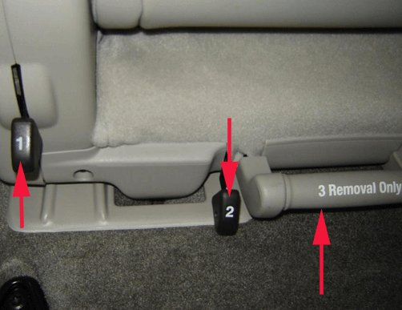

Condition/Cause/Correction # 4
Condition 4Seat will not fully raise to tumbled (folded forward) position.
Cause 4

This condition may be caused by letting go of lever #2 too early, and/or pulling on seat removal handle #3 while attempting to raise the seat to the tumbled position.
If it is found that the issue is not a result of improper lever operation, as explained above, then this condition may be caused by one or both of the front seat latches not fully securing to the floor strikers.
Correction 4
1. Remove the seat. Using seat removal handle #3 Only, pull straight rearward (do not lift) to slide seat back and remove.
2. With the seat folded and laying flat on the cargo area floor, using two hands on the seat (not release handle #3) roll the seat into position and allow the front latches to drop and secure into place, just under the weight of the seat itself. Press down firmly on the top rear of the seat to ensure the rear latches are fully secured.
3. Raise the folded seat up to tumbled position: Lift and hold lever #2 Only (do Not grasp seat removal handle #3, as this may partially disengage the front latches), until the seat is about 1/2 way up.
4. If the seat will still not fully raise to the tumbled position, using seat removal handle #3 Only, pull straight rearward (do not lift) to slide seat back.
5. With the seat folded and laying flat on the cargo area floor, using two hands on the seat (not release handle #3), roll the seat into position and Provide Additional Force to help the front latches drop and fully secure into place. Press down firmly on the top rear of the seat to ensure the rear latches are fully secured.
6. Raise the folded seat up to tumbled position: Lift and hold lever #2 Only (do Not grasp seat removal handle #3, as this may partially disengage the front latches), until the seat is about 1/2 way up.
7. Refer to Condition 1 in this bulletin to investigate and correct front latch operation.